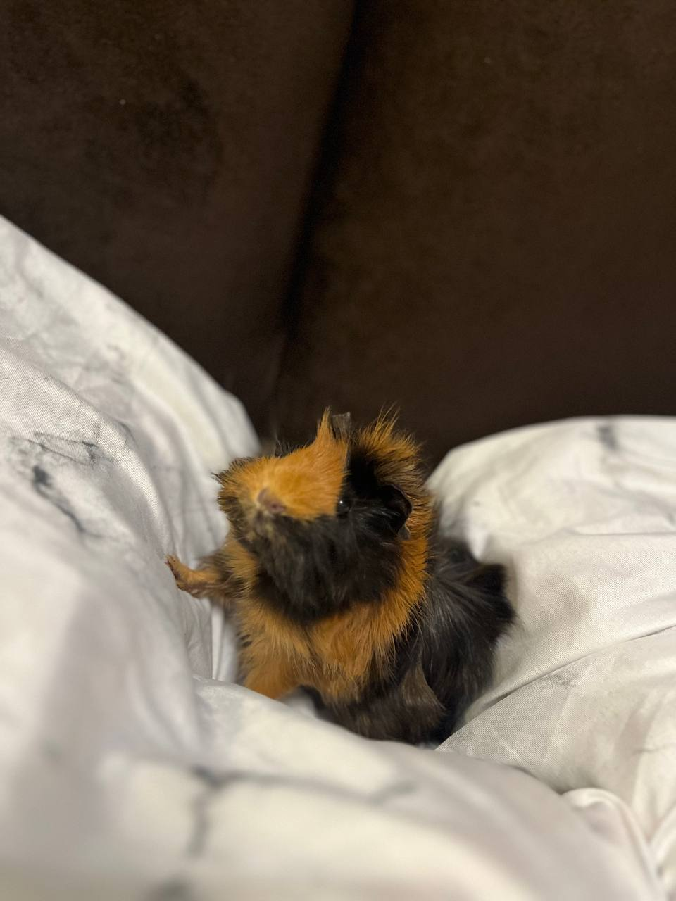

Морские свинки очень дружелюбные и жизнерадостные животные. У них большой спектр эмоций и они с удовольсвтием идут на контакт с хозяином. По сути морская свинка может даже заменить кошку.
Морская свинка любит находиться рядом с хозяином. Любит сидеть на руках и коленках и даже мурчит, когда ее гладишь.
Посмотрите на разных морских свинок!
Это обычная морская свинка. А чуть ниже вы познакомитесь с нашей красавицей Сосиской!
А вот и Сосиска! Она абиссинская морская свинка, оень красивая и с розетками!